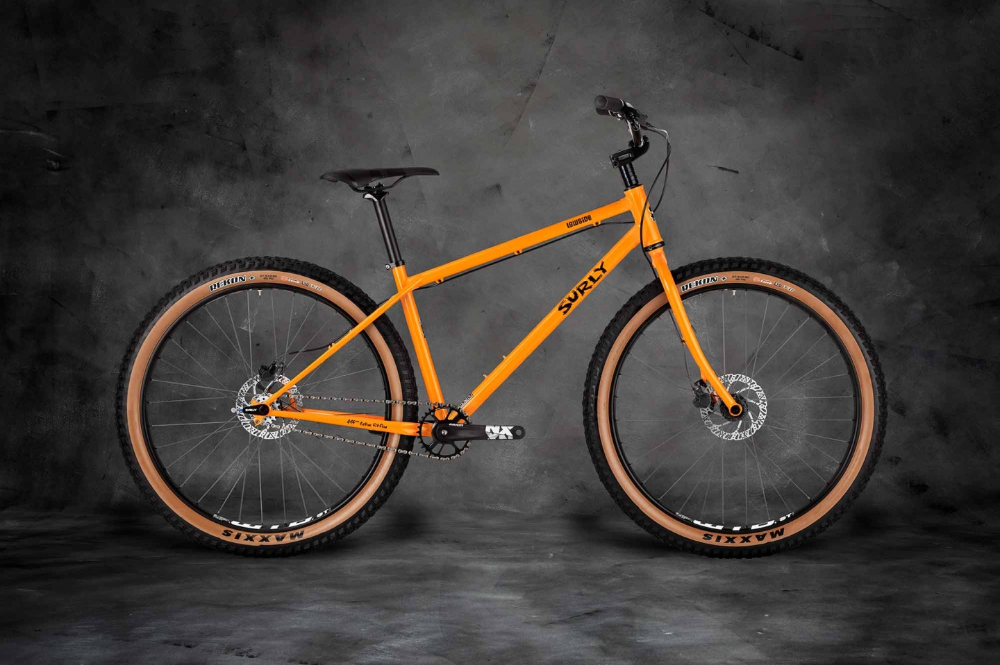
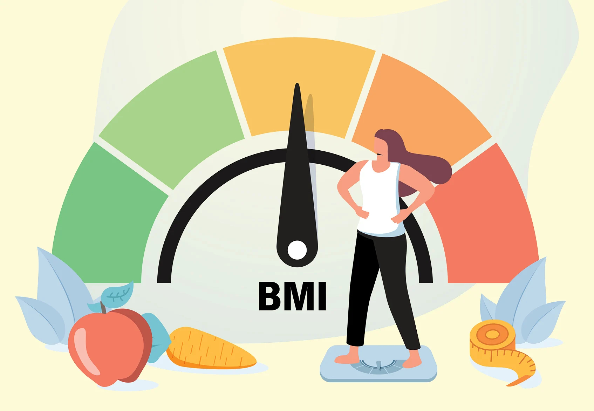

Created an interactive Tableau dashboard to visualize and analyze revenue and pricing data for office supplies across multiple regions. The dashboard provides insights into sales trends, regional price variations, and performance metrics, enabling data-driven decision-making and identifying opportunities for optimizing pricing strategies.

Utilized SQL queries to analyze Amazon's user preferences, optimize resource allocation, and identify top selling products, providing valuable insights to enhance decision-making and drive revenue growth.

Analyzed and visualized bike sales data in Excel, comparing sales across different genders, age groups, and additional factors to uncover trends and provide actionable insights for marketing and sales strategies.

Developed an interactive Tableau dashboard showcasing key facts and statistics for individual Super Bowl games (1-54), along with historical data trends spanning the history of the event, providing a comprehensive view of performance and milestones.

Utilized Excel to create dynamic visualizations comparing coffee sales over time, with the ability to analyze sales by roast type, customer demographics, size, and other key factors, providing valuable insights into purchasing patterns and trends.
Analyzed medal counts and uncovered key insights from the 2024 Summer Olympics in Paris using Tableau, visualizing performance trends, country rankings, and notable achievements to provide a comprehensive overview of the event's results.

Developed a Python script that takes height and weight as input and calculates the corresponding weight class, providing a simple tool for categorizing individuals based on their physical attributes.

Check out my other Tableau dashboards!